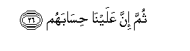

Sacred Texts Islam Index
Hypertext Qur'an Unicode Palmer Pickthall Yusuf Ali English Rodwell
Sūra LXXXVIII.: <u>G</u>āshiya, or The Overwhelming Event. Index
Previous Next

The Holy Quran, tr. by Yusuf Ali, [1934], at sacred-texts.com
Sūra LXXXVIII.: Gāshiya, or The Overwhelming Event.
Section 1
1. Hal ataka hadeethu alghashiyati
1. Has the story
Reached thee, of
The Overwhelming (Event)?
2. Wujoohun yawma-ithin khashiAAatun
2. Some faces, that Day,
Will be humiliated,
3. Labouring (hard), weary,—
4. The while they enter
The Blazing Fire,—
5. The while they are given,
To drink, of a bailing hot spring,
6. Laysa lahum taAAamun illa min dareeAAin
6. No food will there be
For them but a bitter Dharī’
7. La yusminu wala yughnee min jooAAin
7. Which will neither nourish
Nor satisfy hunger.
8. Wujoohun yawma-ithin naAAimatun
8. (Other) faces that Day
Will be joyful,
9. Pleased with their Striving,—
10. In a Garden on high,
11. La tasmaAAu feeha laghiyatan
11. Where they shall hear
No (word) of vanity:
12. Therein will be
A bubbling spring:
13. Feeha sururun marfooAAatun
13. Therein will be Thrones
(Of dignity), raised on high,
14. Goblets placed (ready),
15. And Cushions set in rows,
16. And rich carpets
(All) spread out.
17. Afala yanthuroona ila al-ibili kayfa khuliqat
17. Do they not look
At the Camels,
How they are made?—
18. Wa-ila alssama-i kayfa rufiAAat
18. And at the Sky,
How it is raised high?—
19. Wa-ila aljibali kayfa nusibat
19. And at the Mountains,
How they are fixed firm?—
20. Wa-ila al-ardi kayfa sutihat
20. And at the Earth,
How it is spread out?
21. Fathakkir innama anta muthakkirun
21. Wherefore do thou give
Admonition, for thou art
One to admonish.
22. Lasta AAalayhim bimusaytirin
22. Thou art not one
To manage (men's) affairs.
23. But if any turn away
And reject God,—
24. FayuAAaththibuhu Allahu alAAathaba al-akbara
24. God will punish him
With a mighty Punishment,
25. For to Us will be
Their Return;

26. Thumma inna AAalayna hisabahum
26. Then it will be for Us
To call them to account.